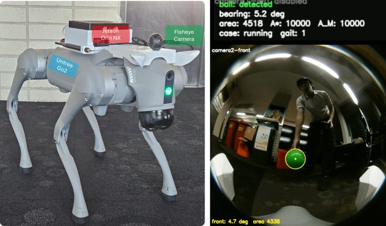

Meet our legged robot · She / Her
Qiuqiu
Four legs. A world to explore.
AIS Group · The University of Queensland
Meet Qiuqiu, our legged robot. She is part of AIS Group, helping us explore how robots learn to move and interact with the world around them.
Our work with her brings together robot learning, locomotion and perception, connecting policies learned in simulation with experiments on a real robot.

Research with her
- Learning to moveExploring reinforcement learning and gait-parameterised policies for her locomotion.
- Perception & trackingConnecting what she perceives with how she moves to follow an object.
- Sim-to-realStudying how learned behaviours transfer from simulation to her real-world movements.
- Experiments & evaluationUsing experiments with her to understand and improve our robot learning methods.
Related work
Interactive Object Tracking on Gait-Parameterized Locomotion Policy